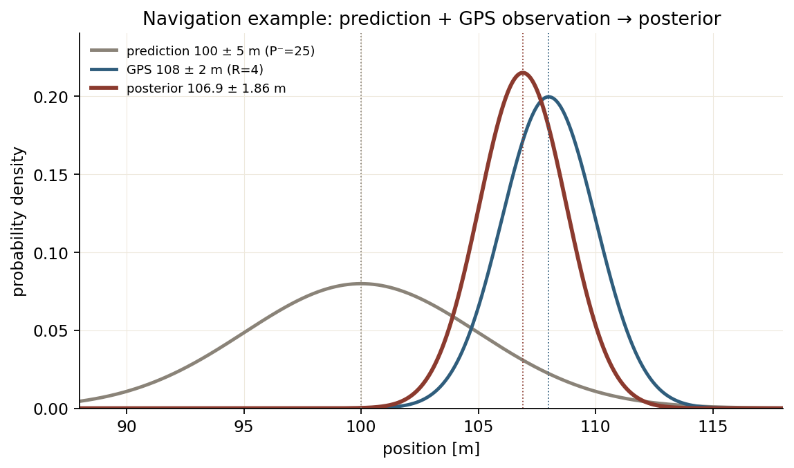
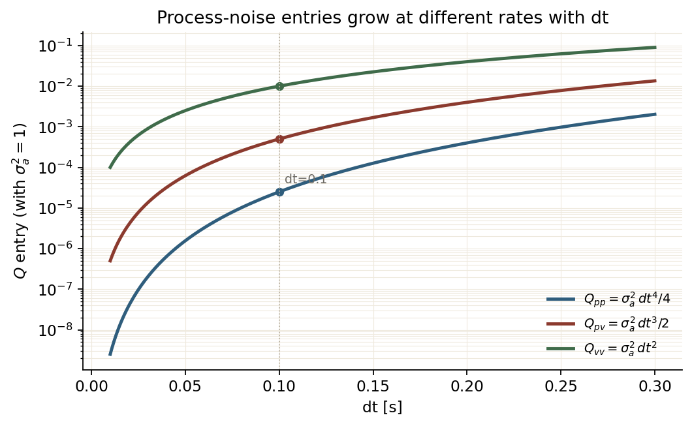

Lesson 0003 · 基础线
噪声：Q/R、马氏距离、NIS
从一个导航例子开始，先把“预测值、观测值、两个不确定度”算清楚，再落到 Q/R、NIS，最后看它们在自瞄里对应什么误差。
- 用“预测值、观测值、两个不确定度”算出一次融合的
K、x⁺、P⁺； - 说清
Q/R分别描述哪一路误差，调大它们怎么改变K； - 从加速度噪声推出
Q里的dt⁴/4、dt³/2、dt²； - 用 NIS 判断一次观测和
Q/R是否对得上。
1. 先看一个导航例子
手机导航里，位置有两路信息：
- 预测：根据上一秒的位置和速度，推下一秒在 100 m，误差大约 ±5 m；
- 观测：GPS 这一次显示 108 m，误差大约 ±2 m。
把两路信息写成四个量：
| 量 | 例子 | 含义 |
|---|---|---|
预测值 x⁻ | 100 m | 运动模型推出来的位置 |
观测值 z | 108 m | GPS 这一次的读数 |
预测不确定度 P⁻ | 25 m²（σ=5 m） | 预测有多不准 |
观测不确定度 R | 4 m²（σ=2 m） | GPS 有多不准 |
注意：P⁻、R 是方差，单位是 m²；开根号后的 σ 才是米。
融合计算：
S = P⁻ + R = 25 + 4 = 29 K = P⁻ / S = 25/29 = 0.862 x⁺ = x⁻ + K(z − x⁻) = 100 + 0.862 × 8 = 106.90 m P⁺ = (1 − K)P⁻ = 3.45 m² σ⁺ = sqrt(3.45) = 1.86 m
三个结果的含义：
K=0.862：这次给 GPS 86% 的权重，预测占 14%；x⁺=106.9 m：落在 100 和 108 之间，更靠近 GPS；P⁺=3.45 m²：融合后的不确定度比 25 和 4 都小，σ 约 1.86 m。
这里的“置信度”就是 P 的大小：P 越小，估计越集中。需要画范围时，用 1σ/2σ 椭圆；P 本身不是一个百分比。

N(100,25)、GPS 观测 N(108,4)、后验 N(106.9,3.45)。后验在两个峰之间，而且更窄。图由 assets/make_noise_intro_figure.py 生成。2. 这个例子在整套东西里的位置
| 内容 | 类型 | 解决什么 |
|---|---|---|
| PnP | 算法 | 像素 ↔ 3D 位姿，给出观测 z |
| KF | 算法 | 预测 + 更新，给出状态 x 和协方差 P |
Q / R | 参数 | 预测和观测各有多不可信，决定 K 信谁 |
NIS / NEES | 检验指标 | 实际残差和 Q/R/P 是否对得上 |
PnP、KF 是算法；Q、R 是算法里的参数；NIS、NEES 是跑完之后的检验指标。这一章不引入新的滤波器。
KF 每一步都在融合两个不确定的东西：预测（模型）和观测（传感器）。Q 描述预测这一步额外增加多少不确定度，R 描述观测误差有多大；它们决定 K 更信谁。融合后的 P 描述估计还剩多少不确定。
协方差的定义、椭圆和 A P Aᵀ 在 0001b 已经讲过，这里直接把它当作“误差的形状”来用。
3. Q 和 R 怎么改变 K
一维融合的权重是：
K = P⁻ / (P⁻ + R)
R大：观测不准 →K小 → 更信预测 → 曲线更平滑，但响应慢；Q大：预测更不确定 →P⁻大 →K大 → 更信观测 → 跟踪更“活”，但更容易被噪声带跑。

K=P⁻/(P⁻+R) 随 R/P⁻ 的变化。调参时看比值，不孤立看 Q 或 R。图由 assets/make_course_figures.py 生成。4. Q 的来历：从加速度噪声到 dt 项
导航例子里 P⁻=25 不是凭空来的：上一轮的 P⁺ 经过 F P Fᵀ 放大，再加这一拍的 Q。Q 描述“目标在这一拍里可能加速/转向，而模型没算到”的那部分误差。
CV 模型的状态是 [p; v]：位置和速度。把这一小段时间里的加速度记作 a。
第一步：写出带加速度的 p、v。
p⁺ = p + v dt + 0.5 a dt² v⁺ = v + a dt
第二步：把“匀速部分”和“加速度带来的偏差”分开。
[p⁺; v⁺] = [[1, dt], [0, 1]] [p; v] + [0.5dt²; dt] · a
= F x + G a
F = [[1, dt], [0, 1]]
G = [0.5dt²; dt]
F 是匀速模型；G 描述加速度 a 怎么进状态：位置受 0.5dt² 影响，速度受 dt 影响。
第三步：把 a 看成随机量。
每一小段时间的加速度是一个随机数：均值为 0、方差为 σ_a²，前后两拍独立。这种随机加速度叫白噪声。它不进入状态，也不被估计，只是每一拍给位置和速度加一点偏差。
E[a] = 0 E[a²] = σ_a² 这一拍的噪声 = G a Q = E[(G a)(G a)ᵀ] = G · E[a²] · Gᵀ = σ_a² G Gᵀ
第四步：把 G Gᵀ 乘开。
G Gᵀ = [0.5dt²; dt] · [0.5dt², dt]
= [[(0.5dt²)², 0.5dt²·dt],
[dt·0.5dt², dt²]]
= [[dt⁴/4, dt³/2],
[dt³/2, dt²]]
Q = σ_a² [[dt⁴/4, dt³/2],
[dt³/2, dt²]]
三个元素分别是：位置方差、位置-速度协方差、速度方差。同一拍加速度会同时改位置和速度，所以非对角线不为 0。单位也对得上：Q[0,0] 是 m²，Q[0,1] 是 m²/s，Q[1,1] 是 (m/s)²。

dt 的增长速度不同：dt⁴/4、dt³/2、dt²。图由 assets/make_q_figure.py 生成。数值感受：取 dt=0.1、σ_a²=100：
Q = 100 × [[0.000025, 0.0005],
[0.0005, 0.01]]
= [[0.0025, 0.05],
[0.05, 1.0]]
速度方差增加 1.0，位置方差只增加 0.0025；两者通过 0.05 的协方差关联起来。
5. 马氏距离与 NIS
回到导航例子，检查这次 GPS 观测是否“正常”：
残差 y = z − x⁻ = 108 − 100 = 8 S = P⁻ + R = 29 NIS = y² / S = 64/29 = 2.21
一维 χ² 的 95% 上界是 3.84；2.21 < 3.84，这次观测和模型对得上。
一般地，y 是观测残差，S 是残差本来应有的协方差。马氏距离就是按 S 的椭圆把残差缩放后再量长度：
d_M = sqrt( yᵀ S⁻¹ y ) NIS = yᵀ S⁻¹ y S = H P⁻ Hᵀ + R
NIS 是马氏距离的平方。模型和噪声都设对时，NIS ~ χ²(m)，m 是观测维数；NIS 的期望是 m，不是 0。
| 自由度 | 5% 下分位 | 95% 上分位 | 均值 |
|---|---|---|---|
| 1 | 0.0039 | 3.841 | 1 |
| 4 | 0.711 | 9.488 | 4 |
sp 的代码里写的是：
constexpr double nis_threshold = 0.711; // 注释：自由度=4，置信水平95%
0.711 是 4 自由度的 5% 下分位，9.488 才是 95% 上分位。用 NIS > 0.711 判失败，健康滤波器大约 95% 的帧都会被判失败。这个阈值和注释对不上，值得核对。

χ²₄ 的概率密度：0.711 在左尾（5% 下分位），9.49 在右尾（95% 上分位）。判“异常”用右尾。图由 verify/verify_projects.py 生成。6. 自瞄里的误差长在哪
把导航例子换成自瞄：预测的是敌方装甲板的位置，观测是相机/PnP 给出的位置。
- 运动：车心平移；整车绕车心旋转；装甲板每 90° 换一块；
- 预测误差：CV 模型没有估计加速度/转向；两帧之间目标已经动了；换板瞬间位置跳变；
- 观测误差：角点像素抖动；距离越远，PnP 深度越不准；斜视角让深度/姿态更差；装甲板有 15° 俯仰。
| 误差来源 | 进入哪里 | 直觉 |
|---|---|---|
| 目标加速、转向 | Q | 预测跟不上机动 |
| 采样间隔、换板 | Q | 两帧之间发生的变化 |
| 像素抖动、远距离 | R | 观测位置不准 |
| 斜视角、15° 俯仰 | R / 观测模型 | 深度方向误差更大 |
所以 Q 要跟目标运动/转速走，R 要跟距离、视角、像素长度走。R 在二维里常常是一个斜椭圆：深度方向长，切向短。

R_xy = σ_r² u_r u_rᵀ + σ_t² u_t u_tᵀ：长轴沿径向（指向相机），短轴沿切向。深度误差比切向误差大，椭圆在视线上被拉长。图由 assets/make_course_figures.py 生成。7. 代码对应
| 项目 | Q 对应什么 | R 对应什么 |
|---|---|---|
| sp | 每个轴的加速度方差 v1=100 | 随斜视角/俯仰变大的 PnP 噪声 |
| wuhan | 车体系加速度方差，旋转到世界系 | 灯条像素长度缩放的图像观测噪声 |
| SHtech | p_coord=1e2 等分块 | 径向/切向各向异性的 R |
代码只是把上一节的误差来源落到具体对象：装甲板的平移/旋转进 Q，PnP/灯条的像素误差进 R。
8. NEES 与自检
NIS 检查观测残差，NEES 检查状态误差：
NEES = (x − x̂)ᵀ (P⁺)⁻¹ (x − x̂)
NEES 需要真值，通常只在仿真里算。长期大于 χ² 上界，说明 P 太小（过度自信）；长期小于下界，说明 P 太大（不够自信）。
1. 导航例子里 K=0.862 说明什么？
2. 把 Q 调得很小，最直接的后果是？
3. 一维例子算出 NIS=2.21，95% 上界 3.84，说明？